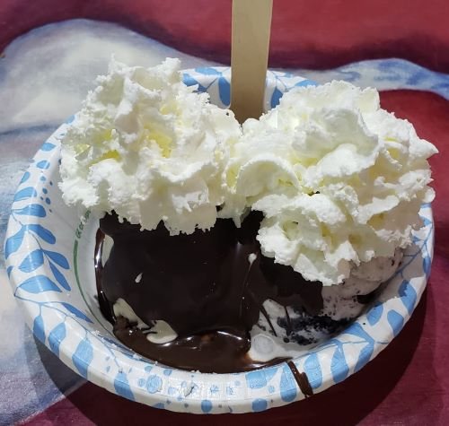

employment era31.jul.24 
i am now a productive member of society (wish i had a money pixel emoji... the actual money emoji will do for now. i like that one with wings, personally) 💸
after feeling like shit after that previous interview i think i spent like 3 days moping about it. but like always, i knew that was not going to change anything. so, i am once again looking for jobs. and i found one. and i got an interview... and i got hired on the spot :) i believe in retail, this is literally the only way you know if they will/want to hire you or not.
anyways. i've worked there for 4 days and i've got a few things to say:
1. i forgot how obnoxious / annoying customers can be  it is honestly a bit crazy the way some people behave. which is why i wrote in my microblog earlier that i think everyone should do mandatory retail. it builds character! so they can know what it's like too. on my first day i was organizing some shelves and i was literally thinking
it is honestly a bit crazy the way some people behave. which is why i wrote in my microblog earlier that i think everyone should do mandatory retail. it builds character! so they can know what it's like too. on my first day i was organizing some shelves and i was literally thinking wow i love doing this i can't believe i get get paid to do this
and then the store got really busy and my brain went *LOUD WRONG BUZZER* now i remember why i get paid for this...
2. i think because the manager know i used to work at another retail store Very Similar to the one i'm working at, i swear i've barely gotten any training  which i guess works?????? but like... you know they are different stores after all, and i haven't worked in retail since mid 2021. so i would appreciate it if i could be given a solid base of how things work around here, because it is obvious some things are done differently. but yeah. i'm kinda just fucking around and finding out as i go. that is honestly the vibe when i clock in. i think these people have too much faith in me.
which i guess works?????? but like... you know they are different stores after all, and i haven't worked in retail since mid 2021. so i would appreciate it if i could be given a solid base of how things work around here, because it is obvious some things are done differently. but yeah. i'm kinda just fucking around and finding out as i go. that is honestly the vibe when i clock in. i think these people have too much faith in me.
3. i miss having work friends!!!!! the reason why i stayed for so long at my previous job was because of the connections i made. which probably sound very cheesy. very let me tell you. this is the way. this is the only way you can balance the madness of having a retail job. and i miss these people!!! despite my prior job being very tiring, i at least got to mess around and have fun with the managers (insert me and the 30 year old manager who's my bestie meme here) and other associates. i think i might have mentioned it in a previous log, but the old friends i visited on my trip to AZ where actually my previous managers from that past job. but i am also aware that i've only been there for... 4 days. so like. it might happen. i just need to give it some time. all i want is free food when i'm called in to work on a day i'm free.
4. i think despite everything i've listed here, the job is not that bad. the managers and associates are quite friendly and help me out idk anything!!!! head empty!!! when needed. the place is also super close from where i'm at. which honestly balances out any con i could possibly have with it. not having to deal with traffic in this place is the equivalent of getting a kiss in the cheek from an angel. i'm serious.
anyway. closing thoughts: i hope job will treat me nicely. i am just happy to finally have something after having spent so much time searching and applying for positions. money is not everything but i kinda need it. i ♥ capitalism. i will now go back to playing new vegas.
fallout: new vegas
interview update15.jul.24 
WELP... *clasp hands* despite thinking that i did okay in the interview and that i already have retail experience, it's been 5 days and i have yet to hear anything back from them...  and the person that interviewed seemed so cool and said they'd let me know if i got the job the next day. the next being, again, 5 days ago. mind you, it is the same company that did THIS to me... it honestly just sucks. for fucking retail and with experience too... is it me? AM I THE PROBLEM? is this a society moment? idk but i am honestly quite pissed nobody bothers to call me either from the 20+ jobs i've applied to. and this interview was the first one in months. it's so frustrating!!!!!!!!!!!!! my right eye has been twitching since the interview because of the stress too.
and the person that interviewed seemed so cool and said they'd let me know if i got the job the next day. the next being, again, 5 days ago. mind you, it is the same company that did THIS to me... it honestly just sucks. for fucking retail and with experience too... is it me? AM I THE PROBLEM? is this a society moment? idk but i am honestly quite pissed nobody bothers to call me either from the 20+ jobs i've applied to. and this interview was the first one in months. it's so frustrating!!!!!!!!!!!!! my right eye has been twitching since the interview because of the stress too.
but anyways, i've been a bit down because of that the past week, cried for a quick minute 3 days ago. i'll survive at the end of the day thankfully. i went to get some ice cream yesterday to cheer me up and now i am okay. 👍
i think i was born to meow, go on walks, and hang out.
meh
new vegas
journal v3 + interview06.jul.24 
hello everyone! last time i wrote a log i was in arizona, but now i'm back in puerto rico :3
so first thing you're going to notice if you are reading this is that i updated my journal page layout! i still love the little notepad look of the past one, but i really needed a change of scenery after having that one since may 2023! i took a lot of inspiration from my currently unused FC2 blog and v4 of komichi's site! i wanted to go for a more relaxed??? or i guess something a little bit easier on the eyes since this is a very paragraph heavy page afterall. i also just wanted a layout similar to that of a blog! hence the inspiration from my FC2 blog. either way, i love changing stuff around every once in a while and i'm pretty satisfied with this look!
it basically functions the same as v2. the iframes are still here and they are not going away. but i did implement a calendar iframe on the sidebar that i will update manually every time i write a log! this way i can link a log's heading in the calendar and you will be taken to the log i wrote that day! i also added some arrows into the iframe so you can toggle between different months. it's nothing fancy. literally just a table with numbers, but i do think it's pretty neat and it's not that tedious to update. there's probably Some way to do that automatically but that probably involves a lot of stuff that i have 0 knowledge on at the moment. oh, also the calendar is in spanish! i thought it would be a nice details to do that.
at a later update i will probably add the music player back with some new songs :3
in other news... i have an interview pretty soon :] yes, it's for retail...  i'm honestly not that crazy about working in retail again after seeing so many horrors but that extra income would be really nice so i can save it for my uni tuition. i just hope i don't cringefail the interview. i get so nervous in interviews despite having done so much at my retail previous job. so i should be okay and get this job! it's honestly a miracle i even have an interview tbh. i've been applying to sooo many retail jobs the past months but i don't even get called for interviews. and it's crazy because i already have experience working in retail!!!!! this shit is crazy bro!!!!!!!!! but whatever honestly. i can't think about it too much or it pisses me off so i let's leave it there. thoughts n prayers for me please.
i'm honestly not that crazy about working in retail again after seeing so many horrors but that extra income would be really nice so i can save it for my uni tuition. i just hope i don't cringefail the interview. i get so nervous in interviews despite having done so much at my retail previous job. so i should be okay and get this job! it's honestly a miracle i even have an interview tbh. i've been applying to sooo many retail jobs the past months but i don't even get called for interviews. and it's crazy because i already have experience working in retail!!!!! this shit is crazy bro!!!!!!!!! but whatever honestly. i can't think about it too much or it pisses me off so i let's leave it there. thoughts n prayers for me please.
HUNGRYYY
hot dogs... soon
vinny vinesauce play elden ring